Linear time-invariant (LTI) systems 2 - frequency response functions#
Homework#
Homework
Using the beam measurements that your group acquired in the previous exercise, calculate and plot the acceleration frequency response functions for all measured excitation locations on the beam. When processing the acquired signals, use the exponential window and the “force” window with the parameters from your assignment data.
Prepare a short report (3 to 10 code cells in a Jupyter Notebook) that shows the assignment data (from the table) and that you took all the parameters and requirements of the assignment into account.
Submit the report in .pdf format (see the instructions for submitting homework).
Addendum: Based on the prepared FRFs at different points of the beam, estimate the first mode shape of the beam.
The mode shape gives the ratio of the response amplitudes of the system to excitation at different points \(i\):
where \(A^r_i\) are the so-called modal constants of the system at the natural frequency \(\omega_r\).
You can estimate the modal constants with any method (see the note below).
You can also use the package sdypy-EMA to identify the modal constants. The following usage example can help you.
Peak-picking method
One of the simplest methods of modal identification is the peak-picking method (also peak amplitude method), written here for the accelerance frequency response function (\(A(\omega)\)):
\(\omega_r = \text{arg max}(|A(\omega)|)\) (angular frequency of the resonance peak)
\(\eta_r = \frac{\omega_a - \omega_b}{\omega_r}\) (damping ratio), where \(\omega_a\) and \(\omega_b\) are the so-called half-power points in the neighborhood of \(\omega_r\):
\(|A(\omega_{a, b})| = \frac{|A(\omega_r)|} {\sqrt{2}}\)
From the FRF of an individual point \(i\), you can then determine the modal constants:
\(A^r_i = |A_i(\omega_r)| \, \eta_r\)
The frequency response function of the receptance \(\alpha(\omega)\) is the ratio between the (complex) amplitudes of the harmonic response (displacements) and the excitation (force) for the observed system:
The impulse response function \(h(t)\) gives the response of the system to an impulse disturbance.
The response to an arbitrary excitation (signal \(f(t)\)) is given by the following relation:
where \(*\) denotes convolution.
Note
The impulse response function and the frequency response function are a Fourier pair:
Note
Forms of frequency response functions
Description of linear time-invariant systems#
The response model of a linear time-invariant system is described by its transfer function.
Let us look at the example of a simple linear oscillator, described by the equation of motion:
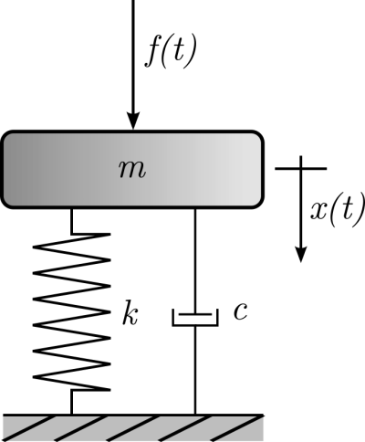
Frequency domain#
The frequency response function of the receptance of a damped linear oscillator is given by:
Laplace domain
The Fourier transform is a special form of the Laplace transform, which is often used to convert differential equations into algebraic equations.
The following relation holds between the frequency (\(\omega\)) and the Laplace (\(s\)) domain:
\(s = \mathrm{i} \, \omega\)
The above transfer function of the linear oscillator is then written in the \(s\)-domain as:
Let us look at a concrete example:
m = 2
k = 50
c = 2.5
freq = np.linspace(0, 10, 101)
w = 2*np.pi*freq
def H_f(freq, m, k, c):
"""
Frequency response function of a linear oscillator.
"""
omega = 2*np.pi*freq
return 1 / (-omega**2*m + 1j*omega*c + k)
def H_s(freq, m, k, c):
"""
Transfer function of a linear oscillator in the s-domain.
"""
omega = 2*np.pi*freq
s = 1j*omega
return 1 / (m*s**2 + c*s + k)
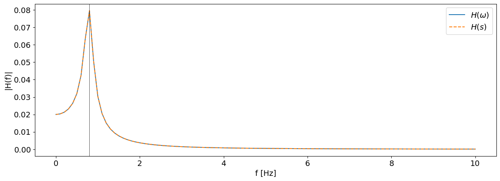
Task 1 (10 minutes): using scipy.signal.lti
Define the linear oscillator system using scipy.signal.lti. Use the documentation to help you.
Use the transfer function of the system in the \(s\)-domain:
Compare the frequency response function and the impulse response function, prepared from the equation above, with those you get from lti.freqresp and lti.impulse.
T = 1 / (freq[1] - freq[0])
dt = 1/ (2*freq[-1])
t = np.arange(0, T+dt, dt)
Recall that the frequency response function \(\alpha(\omega)\) and the impulse response function \(h(t)\) are a Fourier pair:
h = np.fft.irfft(H_f(freq, m, k, c), n=2*(len(freq)-1)+1)
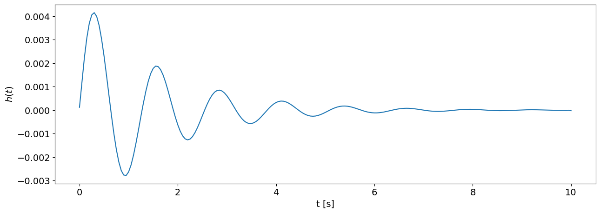
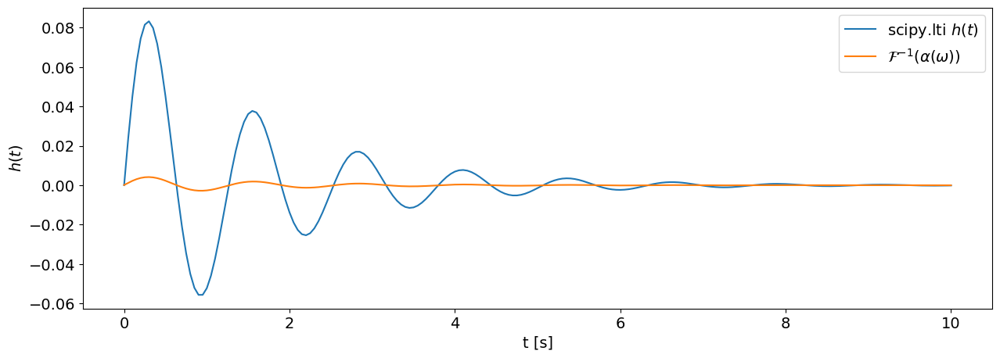
We see that the two calculated impulse response functions are normalized differently.
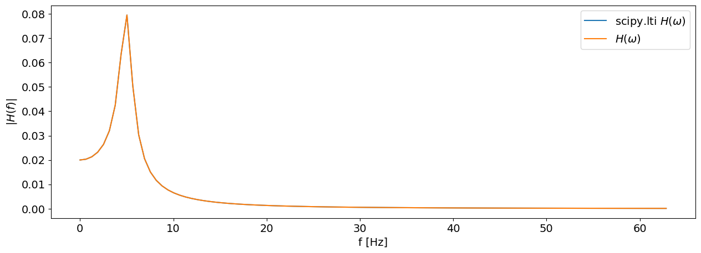
Task 2 (20 minutes): properties of linear time-invariant systems
Using the impulse response function \(h(t)\) prepared above and lti.output, demonstrate in two ways the principle of superposition:
and the property of time invariance:
of a linear time-invariant system.
Use the signals \(f_1\), \(f_2\) and the values of the constants \(a_1\), \(a_2\) prepared below.
a_1 = 25
a_2 = -35
f_1 = np.zeros_like(t)
f_1[10:20] = np.sin(2*np.pi*np.arange(10)/20)
f_2 = np.zeros_like(t)
f_2[32:36] = np.sin(2*np.pi*np.arange(4)/8)
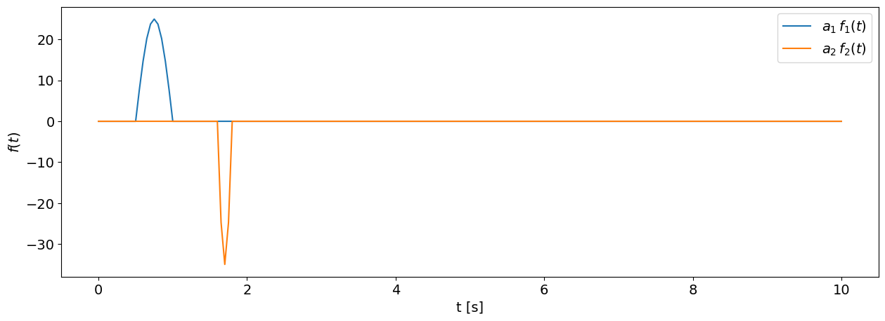
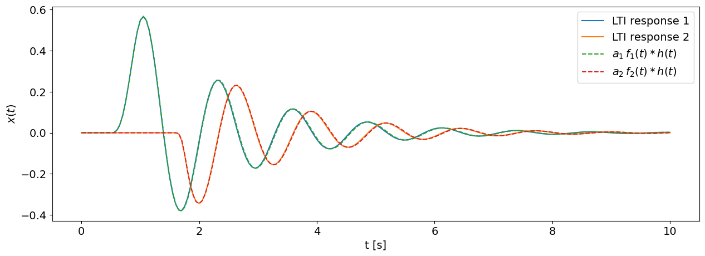
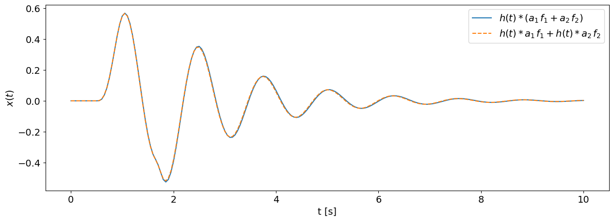
Signal processing for estimating the impulse response function#
Task 3 (30 minutes): frequency response functions of the beam
On the example of the beam from the previous exercise, we estimate the measured accelerance frequency response functions of the beam.
Let us load the file with the measurements:
meritev_pot = '../data/06/meritev.lvm'
meritev = lvm_read.read(meritev_pot)
Let us select one of the measured points.
To demonstrate the importance of processing the acquired signals, we use only a part of the acquired time series (\(T_{\text{analysis}}\)).
točka = 7
T_analiza = 0.5
dt = meritev[točka]['Delta_X'][0]
N = int(T_analiza * 1/dt)
print(meritev[točka]['Y_Unit_Label'])
['Newtons', 'g', '']
f, a_g = meritev[točka]['data'][:N].T
a = a_g * 9.81
t = np.arange(len(f)) * dt
We see that, within the observed time interval, the acquired response of the system does not decay completely.
Let us look at the amplitude spectra of the acquired signals for the selected point:
F = np.fft.rfft(f) / len(f)
F[1:] *= 2
A = np.fft.rfft(a) / len(a)
A[1:] *= 2
freq = np.fft.rfftfreq(len(t), dt)
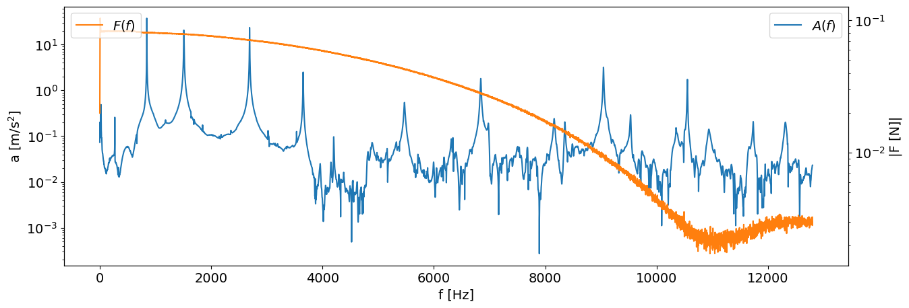
Let us estimate the frequency response function:
H = A / F
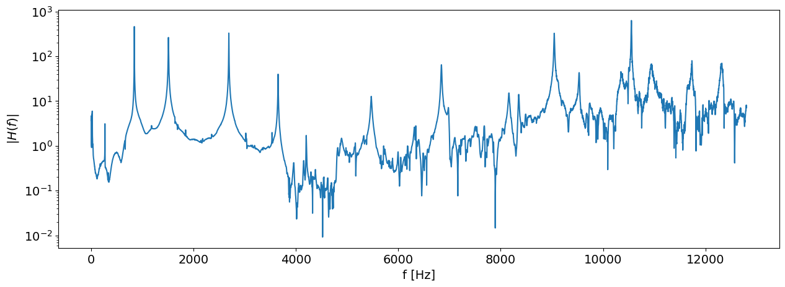
Exponential window#
To satisfy the assumption of signal periodicity when the response of the system does not decay within the acquired time interval, we use the so-called exponential window:
Instead of the time constant \(\tau\), we often want to specify the final amplitude \(p\) (as a fraction of the initial amplitude) that the window reaches at time \(T\). The following holds:
p = 0.01 # 1 %
tau = -(len(t) - 1) / np.log(p)
w_exponential = signal.windows.exponential(len(t), center=0, tau=tau, sym=False)
w_exponential[-1]
np.float64(0.010000000000000004)
Example of using the exponential window on a numerical model#
k2 = (100*2*np.pi)**2
m2 = 1
c2 = 5.
sistem_primer = signal.lti([1], [m2, c2, k2])
f_primer = np.zeros_like(t)
f_primer[1000:1010] = 1.
t, x_primer, _ = sistem_primer.output(f_primer, t)
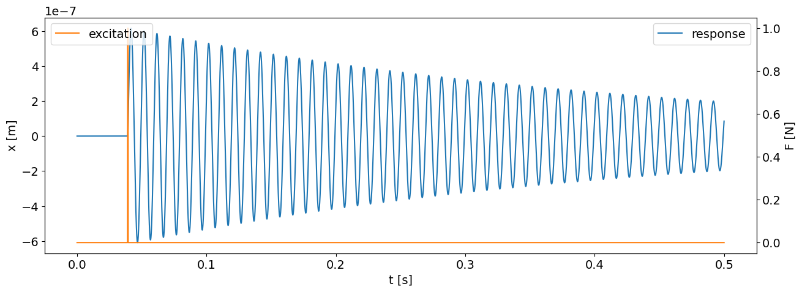
X_primer = np.fft.rfft(x_primer) / len(t)
X_primer[1:] *= 2
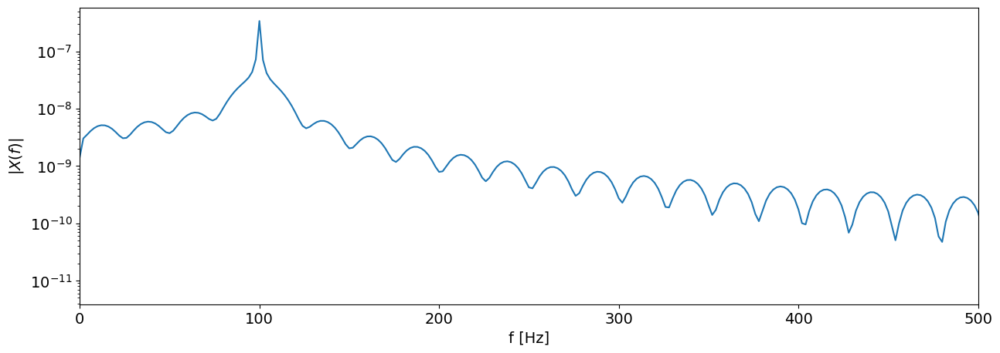
Since we did not acquire a perfectly periodic signal in the observed time window, we see the phenomenon of spectral leakage (Spectral Leakage) in the amplitude spectrum.
We can remove it by an appropriate use of windows.
X_okno = np.fft.rfft(x_primer*w_exponential) / len(t)
X_okno[1:] *= 2
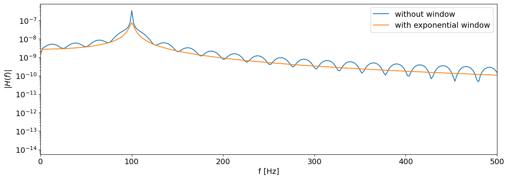
F_primer = np.fft.rfft(f_primer) / len(t)
F_primer[1:] *= 2
w, H_primer = sistem_primer.freqresp(2*np.pi*freq)
H_okno = X_okno/F_primer
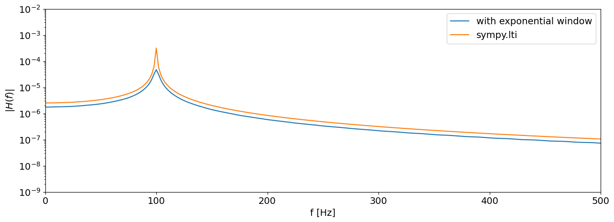
Using the exponential window on the beam measurement#
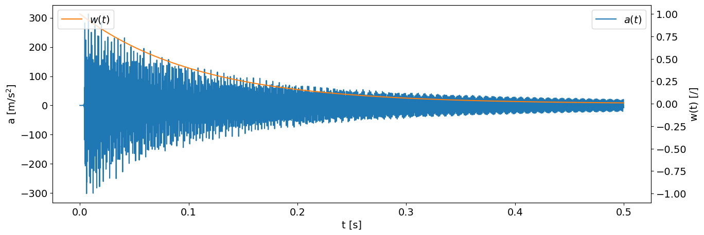
a_w = a * w_exponential
A_w = np.fft.rfft(a_w) / len(a_w)
A_w[1:] *= 2
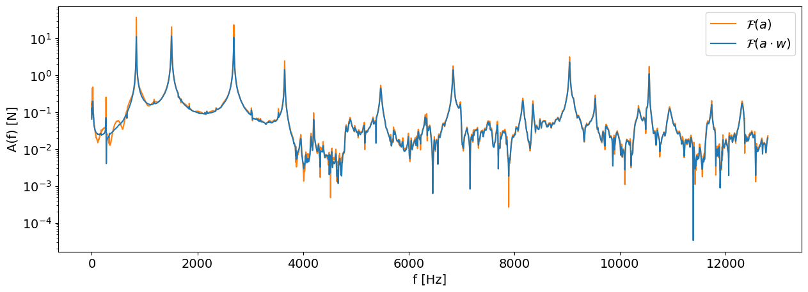
Force window#
To reduce the influence of noise on the input signal \(f(t)\), we use the so-called “force” window, with which we zero the values of the force signal after the end of the impact.
The parameter of the “force” window is the length of the window segment with unit amplitude (as a fraction of the total signal length), which we denote by \(l_w\).
To prepare the “force” window, we can use the cosine-taper window scipy.signal.windows.tukey.
l_w = 0.1
N_w = int(l_w * len(t))
w_force = np.zeros_like(t)
w_force[:N_w] = signal.windows.tukey(len(t)*2, alpha=0.05)[-N_w:]
Since we used the exponential window on the response signal, we must also use the exponential window on the force signal.
w_f = w_force * w_exponential
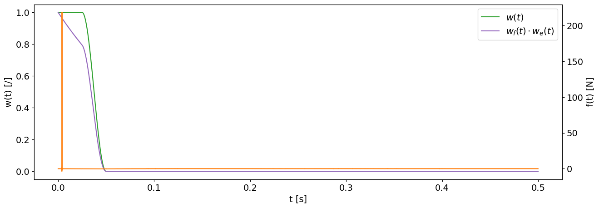
Using the force window:
f_w = f * w_f
F_w = np.fft.rfft(f_w) / len(f_w)
F_w[1:] *= 2
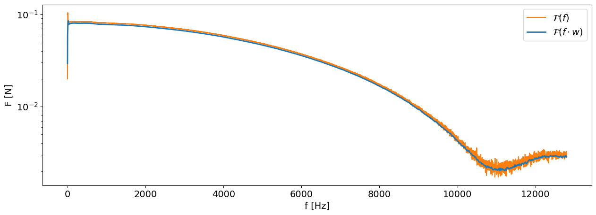
FRF with windows#
H_w = A_w / F_w
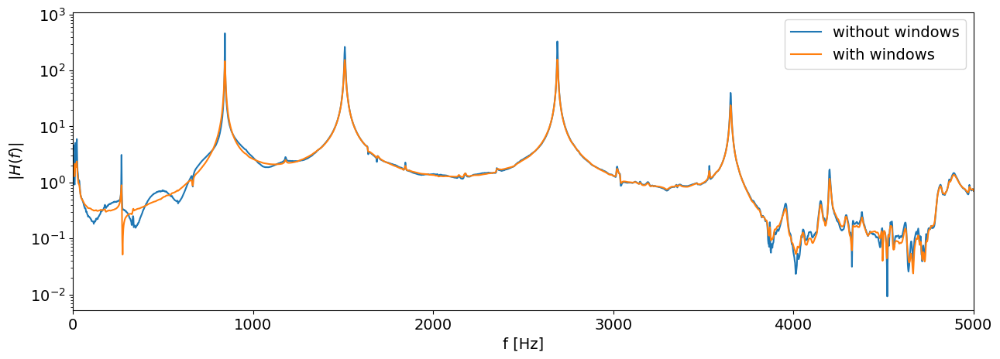